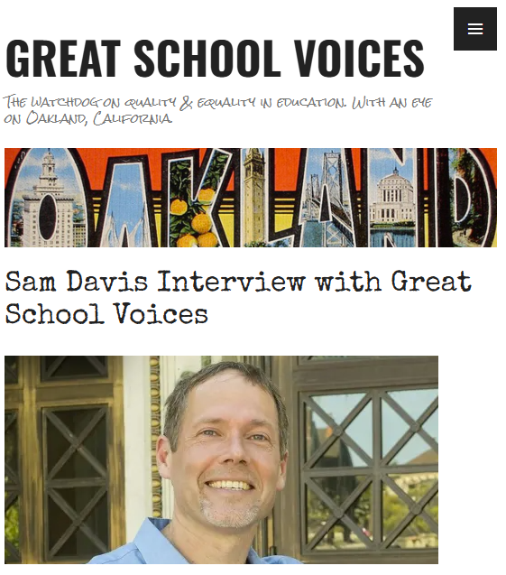
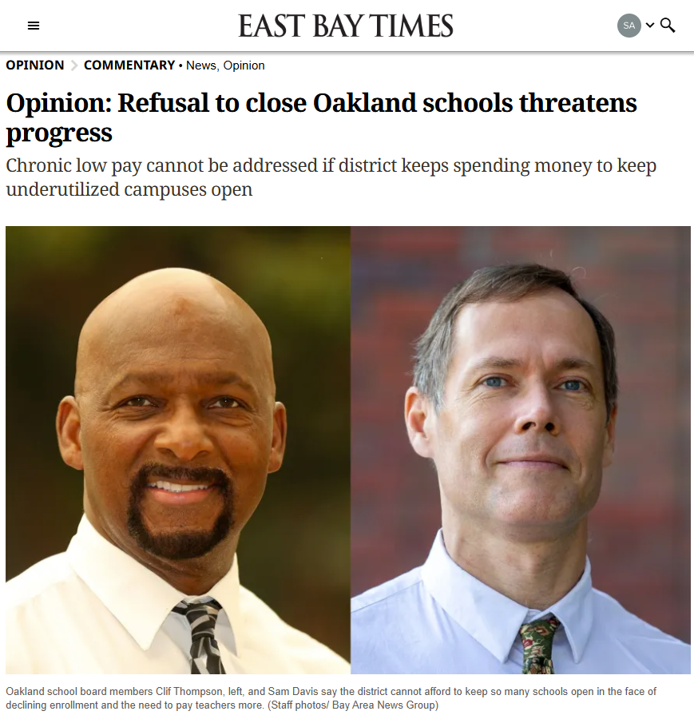
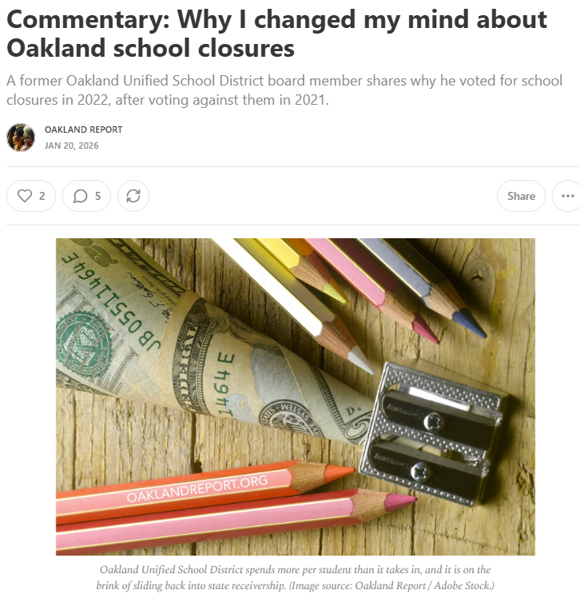

ABOUT
IN THE MEDIA
News Articles
>
NBC-TV Bay Area, 10/4/2023: Leaders Call on California to Block Controversial Solar Power Proposal
ABC-7 News, 8/12/2024: OUSD is Back to School Facing Big Challenges with Budget Uncertainty
Interviews
>

Op Eds
>


Event Videos
>
Measure G & G1 Celebration
Town Hall: The Future of Affordable & Workforce Housing on Unused OUSD Sites
Want to get in touch?
Please write to me at Sam Davis <info@sam-davis.net> to set up a time to chat!